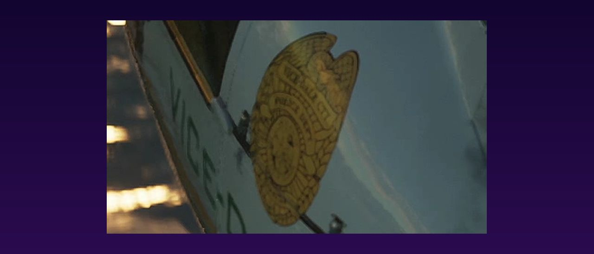
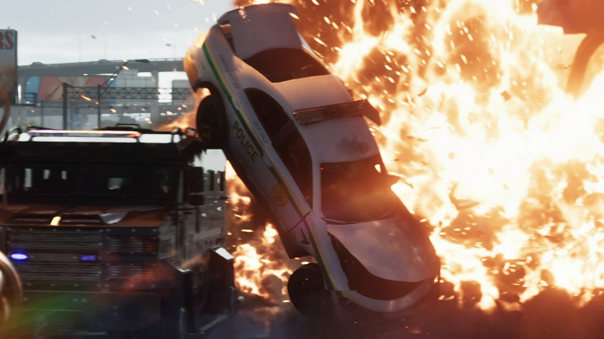
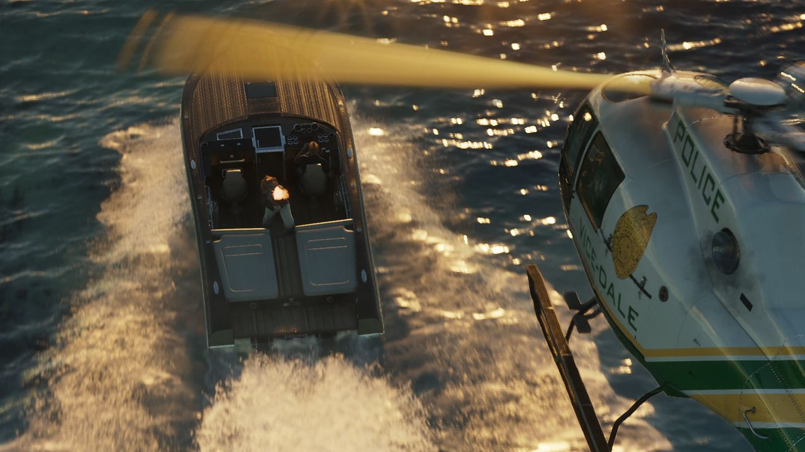

© Rockstar Games / Take-Two Interactive — image officielle de GTA VI (bande-annonce), via GTA Wiki.
Organisation
Police de Vice-Dale (VDPD)
EN BREF
- Sigle : VDPD
- Type : Police de comté
- Territoire : Comté de Vice-Dale
- Livrées : Blanc et vert, ou « panda » vert foncé et blanc
- Inspiration : Miami-Dade Sheriff's Office
La Vice-Dale Police Department (VDPD) couvre tout le comté de Vice-Dale, autour de Vice City. C'est elle qui arrête le « Leonida impertinent » dans la bande-annonce 1.
Galerie


© Rockstar Games / Take-Two Interactive — images officielles de GTA VI (bandes-annonces, captures, site officiel), via GTA Wiki.
Véhicules repérés
- Buffalo STX Pursuit blanc et vert ou « panda »
- Police Cruiser (Interceptor) Vapid blanc et vert
- Hélicoptère Police Maverick
- Camion de police Bison
- Voiture de police Vapid en livrée « panda »
Inspiration
Elle s'inspire du Miami-Dade Sheriff's Office, connu de 1997 à 2025 sous le nom de Miami-Dade Police Department.
Sources : GTA Wiki, Rockstar Games (galerie média)